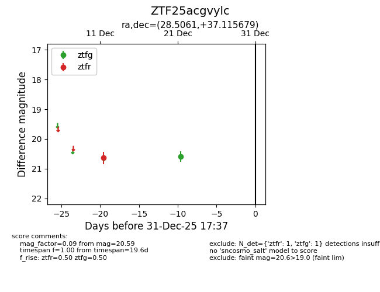
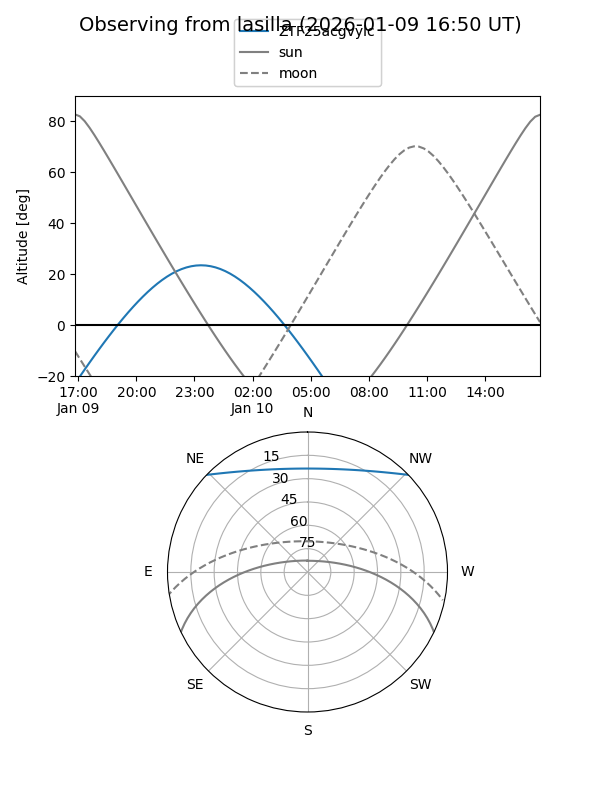
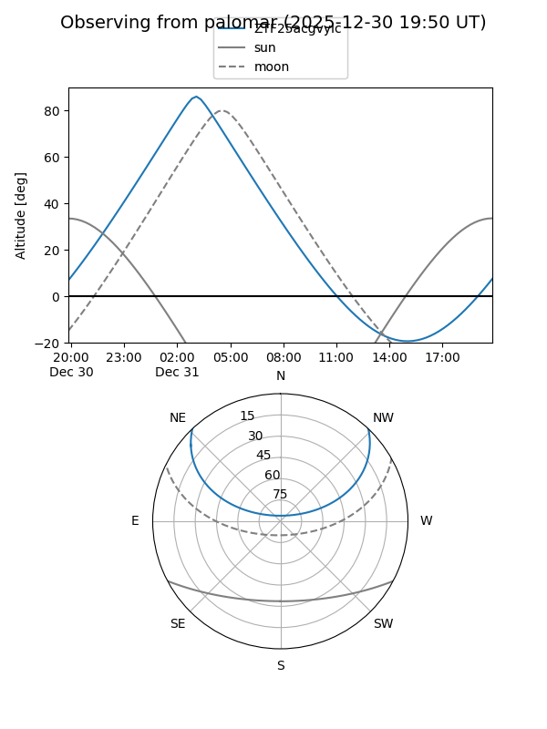

ZTF25acgvylc
Target ZTF25acgvylc at 2025-12-31 18:00
Aliases and brokers:
FINK: link
Lasair: link
ALeRCE: link
alt names
ZTF25acgvylc (ztf,fink_ztf)
Coordinates:
equatorial (ra, dec) = 28.5061,+37.11568
equatorial (HMS+DMS) = 01:54:01.46,+37:06:56.44
galactic (l, b) = (136.5585,-24.09445)
Flags:
Photometry:
last ztfg=20.59, ztfr=20.63
1 ztfg, 1 ztfr detections
Lightcurve

Visibility


Additional plots